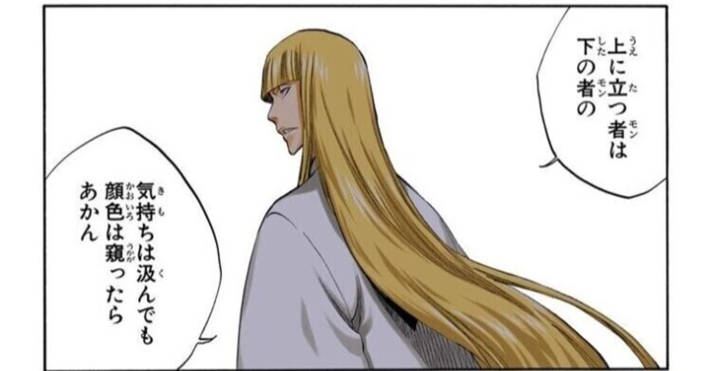

OFFJT — Learning Log · 2025.11 – 2026.03
デザイナー2人がフロントエンド開発とAIツールを実践し、基礎知識からモダンツールまで 横断的に理解を深めた約4ヶ月の記録。HTML/CSSの写経から始まり、React + Storybookによる UIカタログ構築まで到達した。
Phase 01
インターネットの仕組みを体系的に整理。URL を入力してからブラウザに表示されるまでの9ステップ（DNS 問い合わせ → HTTP リクエスト → レンダリング）を学習。HTML/CSS の基礎・reset.css・Flexbox レイアウト・JavaScript 入門まで到達。
Phase 02
中級・上級の Codejump サイトを制作。JavaScript でハンバーガーメニュー・ページ遷移・ページネーションを実装。Homebrew・Git・GitHub を導入し、VSCode からリポジトリを公開する一連のフローを習得した。
Phase 03
React + Vite でプロジェクトを立ち上げ、Storybook に Button コンポーネントを登録。Figma（FigJam）の仕様をそのまま Storybook に埋め込む addon-designs も導入。Webpack と Vite の違いを概念から理解した。
Phase 04
TypeScript で Button コンポーネントを型安全に実装。visualState props による hover/disabled の固定表示、Storybook Controls でのインタラクティブなカタログを完成させた。パス空白・ターミナルエラーなど現場レベルの詰まりポイントも自力で解決。
Phase 01 / 2025年11月
2025.11 — HTML · CSS · JavaScript · レンダリング
01 — インターネットの仕組み
DNS 問い合わせ・IP 取得・TCP 接続・HTTP リクエスト/レスポンス・レンダリングの9ステップを体系的に整理した。
02 — レンダリング
HTML → DOM ツリー、CSS → CSSOM ツリー、合成 → レイアウト → ペイントの流れを理解。JS 操作でリフローが発生するコストも把握。
03 — HTML / CSS
セマンティックタグ・Box Model・Flexbox レイアウトを習得。reset.css でブラウザ差異をゼロにするところから始めた。
04 — JavaScript
変数・関数・querySelector・addEventListener を学び、「ボタンを押すと色が変わる」インタラクションを初めて自作した。
Phase 02 / 2025年12月
2025.12 — JavaScript · Git · GitHub · Homebrew
01 — JavaScript 実践
body.menu-open クラスをトグルし、CSS でスライドイン・背景マスクを制御。CSS 単体ではクリック後の挙動を指定できないと理解した。
02 — JavaScript 実践
data-page 属性で商品を分類し、ページ番号クリックで表示切り替え。querySelectorAll で複数要素を一括操作する手法を習得。
03 — バージョン管理
commit（ローカル保存）→ push（リモート共有）のフローを体得。VSCode から「Publish to GitHub」で自動連携、GitHub Pages で公開。
04 — 環境構築
Mac の開発ツール（Git・Node.js・gh CLI）を一括管理。brew install node だけで環境が整う便利さを実感した。
よくあったエラーと対処
git:// から https:// に変更して解決git push --set-upstream origin main を実行Phase 03 / 2026年1–2月
2026.01–02 — React · Vite · Storybook · Figma
単なる HTML ファイル制作から一歩進み、モダンなフロントエンド開発のワークフローへ移行した。Figma（FigJam）で定義した仕様を React コンポーネントとして実装し、Storybook でカタログ化する一連の流れを習得。
01
Figma (FigJam)
variant / size / state / width の仕様定義
02
Button.tsx
React + TypeScript で実装
03
Button.stories.ts
Storybook にストーリーを登録
04
addon-designs
Figma を Storybook 内に直接埋め込み
Webpack と Vite はどちらも「JS をまとめるビルドツール」だが、その思想は大きく異なる。
Webpack — 信頼のベテラン
Vite — 期待の新星 ✓ 採用
React + Vite セットアップ
# プロジェクト作成 npm create vite@latest my-site -- --template react-ts cd my-site && npm install && npm run dev # Storybook 初期化 npx storybook@latest init npm run storybook # Figma 埋め込みアドオン npm i -D @storybook/addon-designs
詰まったところ
sh: vite: command not found → フォルダ名の空白が原因。OFFJT 2:7 → OFFJT_2-7 にリネームで解決Could not read package.json → my-site の外から実行していた。cd my-site してから実行zsh: parse error near '}' → TypeScript コードをターミナルに直接貼っていた。VSCode でファイルに書くPhase 04 / 2026年3月
2026.03 — TypeScript · Button Component · Storybook
TypeScript を導入。デザイナーが Figma で定義した variant / size / width / state の仕様を、そのまま props の型として表現できることで「デザインと実装の乖離」を防ぐ設計を体感した。
Button.tsx — 型定義
export type ButtonAppearance = | "primaryFilled" | "primaryOutlined" | "primaryGhost" | "alertFilled" | "alertOutlined" | "alertGhost" | "neutralGhost"; export type ButtonSize = "small" | "medium" | "large"; export type ButtonWidth = "hug" | "fill"; /** Storybook 上でホバー/無効化の見た目を固定表示するための state */ export type ButtonVisualState = "default" | "hover" | "disabled";
ポイント 01
.ts はロジック・型定義・設定ファイル。.tsx は JSX（HTML ライクな UI 記述）を含む React コンポーネント。
ポイント 02
マウスイベントではなく data-state="hover" 属性で見た目を CSS から制御。Storybook 上でホバー状態を常に確認できる設計にした。
学んだこと
できたこと
